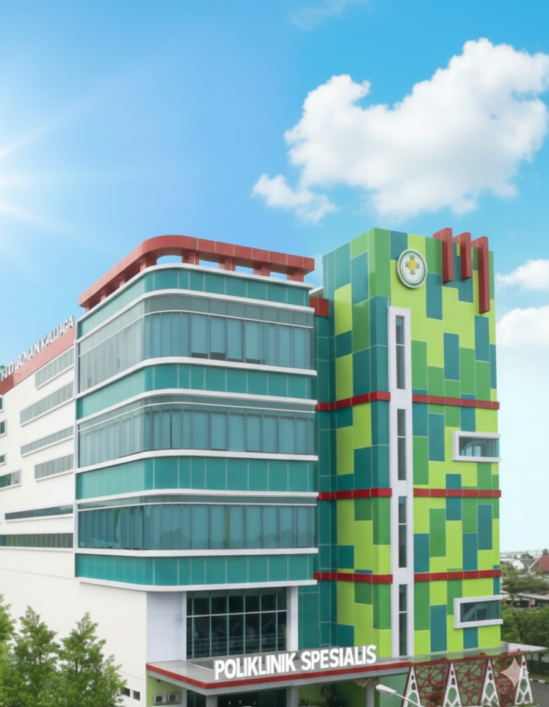
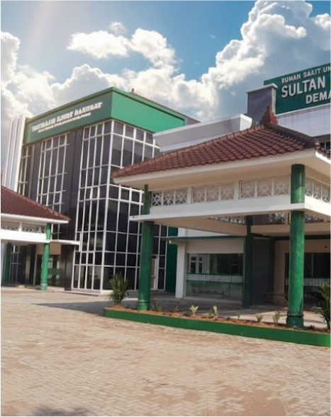
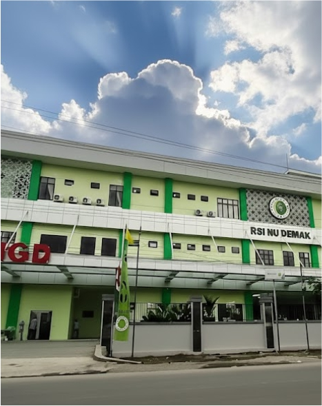
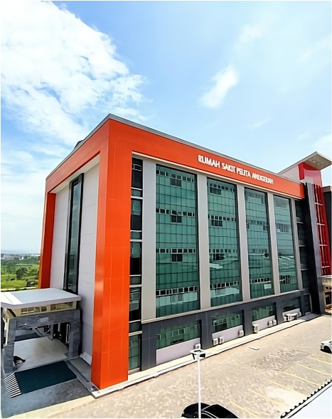
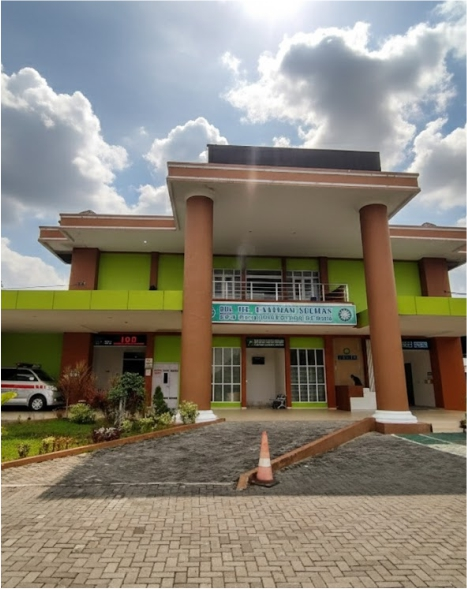
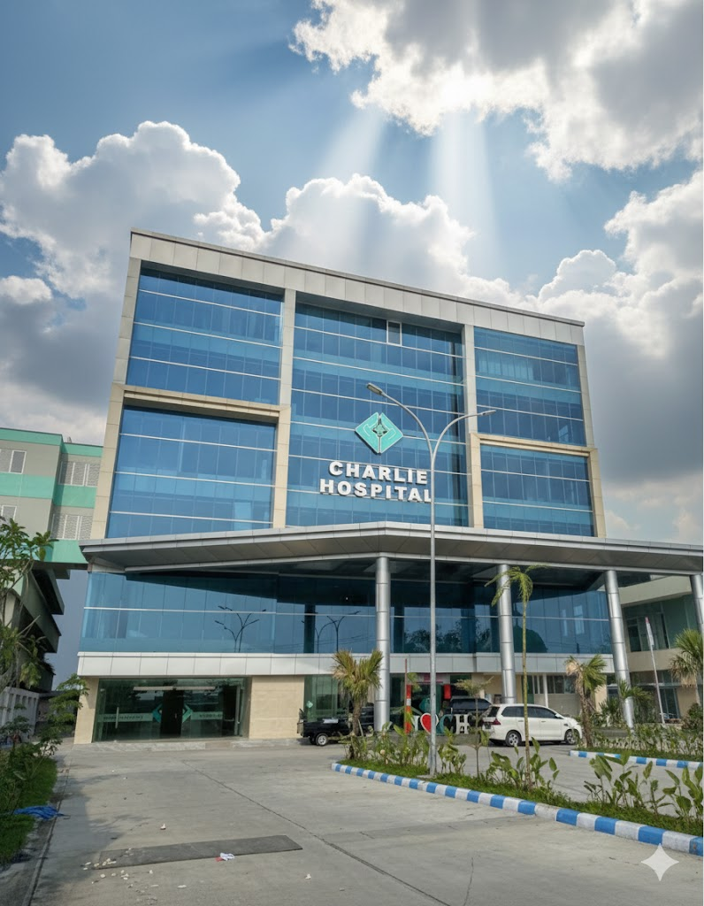

Konsultasikan masalah kesehatan Anda dengan Dokter yang handal dan terpercaya.
Dapatkan layanan medis secara cepat, tepat dan mudah.
Ikuti program kesehatan spesial yang bisa mendukung kesehatan Anda dengan lebih optimal.
Kami bekerjasama dengan dokter berpengalaman dari Rumah Sakit di Kabupaten Demak yang akan menjawab pertanyaan dan keluhan kesehatan Anda.
Dapatkan layanan konsultasi kesehatan tanpa biaya untuk membantu menjawab berbagai keluhan dan pertanyaan kesehatan Anda dengan tepat dan terpercaya.
Kami menyediakan layanan kesehatan yang mudah diakses kapan saja dan di mana saja, sehingga masyarakat dapat memperoleh informasi dan bantuan kesehatan dengan mudah dan praktis.
Konsultasikan masalah kesehatan Anda dengan Dokter yang handal dan terpercaya. Dapatkan layanan medis secara cepat, tepat dan mudah.






Pengguna mengisi formulir pendaftaran yang berisi data diri dan keluhan kesehatan sebagai dasar pelayanan konsultasi.
Pilih RS dan Layanan SpesialisPengguna memilih rumah sakit serta layanan dokter spesialis sesuai dengan kebutuhan dan keluhan kesehatan.
Mulai ChatPengguna memulai konsultasi melalui fitur chat untuk berkomunikasi langsung dengan dokter atau tenaga kesehatan secara online.
KONSULTASI SEKARANG